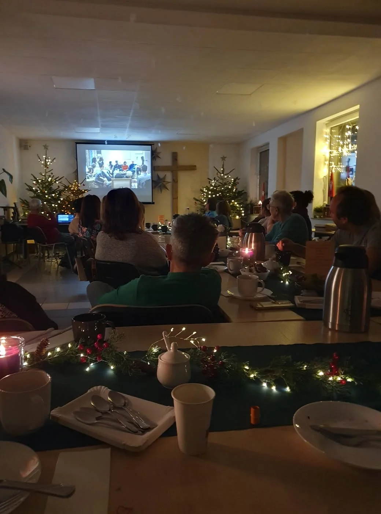

Kolacja
Spotkanie zaczyna się przy stole. Jedzenie pomaga zwolnić, poznać imiona i zbudować zwyczajną relację.
Czym jest Alpha?
Alpha to seria jedenastu spotkań oraz Dnia lub weekendu Alpha. Każde spotkanie ma prosty rytm: wspólny posiłek, film i rozmowa w małej grupie.
Spotkanie zaczyna się przy stole. Jedzenie pomaga zwolnić, poznać imiona i zbudować zwyczajną relację.
Krótki materiał wprowadza temat: kim jest Jezus, po co się modlić, jak czytać Biblię i gdzie w tym wszystkim jest Duch Święty.
Nie ma odpytywania ani przekonywania na siłę. Można dzielić się własnym zdaniem, pytać, wątpić lub słuchać.

Dla kogo?
Alpha powstała z myślą o osobach niewierzących, poszukujących albo wracających do pytań o wiarę. Nie trzeba znać modlitw, nauczania Kościoła ani mieć gotowego stanowiska.

Jak wygląda wieczór?
Ważniejsza od zegarka jest atmosfera: gościnność, uważne słuchanie i swoboda.
Najczęstsze pytania
Nie. Alpha ma charakter chrześcijański i ekumeniczny. Jest prowadzona w różnych tradycjach Kościoła, a w Lubecku działa w środowisku katolickim.
Nie. Alpha jest szczególnie otwarta na osoby, które są daleko od Kościoła, mają wątpliwości albo dopiero zaczynają szukać.
Rolą gospodarza jest słuchać i pomagać w rozmowie. Alpha nie jest debatą ani egzaminem z wiary.
Udział w Alpha jest bezpłatny. Organizatorzy mogą informować o dobrowolnym wsparciu kosztów posiłków lub wyjazdu, jeśli jest ono potrzebne.
Regularność pomaga zbudować relacje i przejść całą drogę tematów. Jeśli jednak nie możesz być raz czy dwa, porozmawiaj z organizatorami.
Napisz do nas. Jeśli nie prowadzimy aktualnie edycji dla uczestników, pomożemy poszukać Alpha w Twojej okolicy.